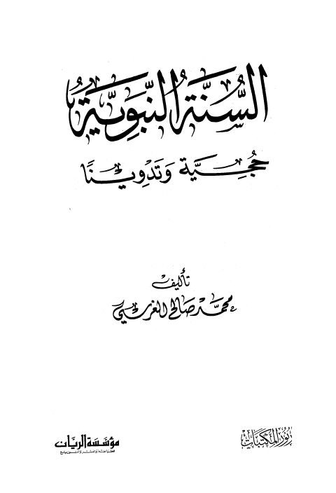

Downloads need an internet connection.
السنة النبوية حجة وتدوينا
Authors: محمد صالح الغرسي
Publishers: مؤسسة الريان دار نور المكتبات
**▫️ العنوان: السنة النبوية حجة وتدوينا** ▪️ المؤلف: #محمد_صالح_الغرسي ▫️ الناشر: #مؤسسة_الريان • #دار_نور_المكتبات ▪️ تاريخ النشر: 1422هـ 2001م ▫️ بلد النشر: بيروت، #لبنان • جدة، #السعودية ▪️ الطبعة: 1 ▫️ عدد الأجزاء: 1 ▪️ الصفحات: 184 ▫️ نوع الوعاء: #كتاب ▪️ التصنيف الرئيسي: #الحديث_وعلومه ۪